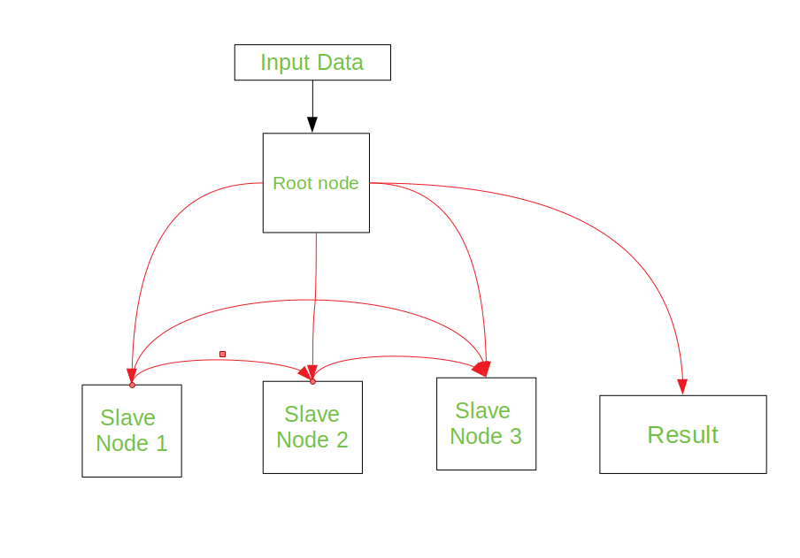

Cluster is a set of loosely or tightly connected computers working together as a unified computing resource that can create the illusion of being one machine. Computer clusters have each node set to perform the same task, controlled and produced by software.
The components of a clusters are usually connected to each other using fast area networks, with each node running its own instance of an operating system. In most circumstances, all the nodes uses same hardware and the same operating system, although in some setups different hardware or different operating system can be used.

Types of Clusters –
Computer Clusters are arranged together in such a way so as to support different purpose from general purpose business needs such as web-service support, to computation intensive scientific calculation. Basically there are three types of Clusters, they are:
- Load-Balancing Cluster – A cluster requires an effective capability for balancing the load among available computers. In this, cluster nodes share computational workload so as to enhance the overall performance. For example- a high-performance cluster used for scientific calculation would balance load from different algorithms from the web-server cluster, which may just use a round-robin method by assigning each new request to a different node.This type of cluster is used on farms of Web servers (web farm).
- Fail-Over Clusters – The function of switching applications and data resources over from a failed system to an alternative system in the cluster is referred to as fail-over. These types are used to cluster database of critical mission, mail, file and application servers
- High-Availability Clusters – These are also known as “HA clusters”. They offer a high probability that all the resources will be in service. If a failure does occur, such as a system goes down or a disk volume is lost, then the queries in progress are lost. Any lost query, if retried, will be serviced by different computer in the cluster. This type of cluster is widely used in web, email, news or FTP servers.
Benefits –
- Absolute scalability – It is possible to create a large clusters that beats the power of even the largest standalone machines. A cluster can have dozens of multiprocessor machines.
- Additional scalability – A cluster is configured in such a way that it is possible to add new systems to the cluster in small increment. Clusters have the ability to add systems horizontally. This means that more computers may be added to the clusters to improve its performance, redundancy and fault tolerance(the ability for a system to continue working with a malfunctioning of node).
- High availability – As we know that each node in a cluster is a standalone computer, the failure of one node does not mean loss of service. A single node can be taken down for maintenance, while the rest of the clusters takes on the load of that individual node.
- Preferable price/performance – Clusters are usually set up to improve performance and availability over single computers, while typically being much more cost effective than single computers of comparable speed or availability.